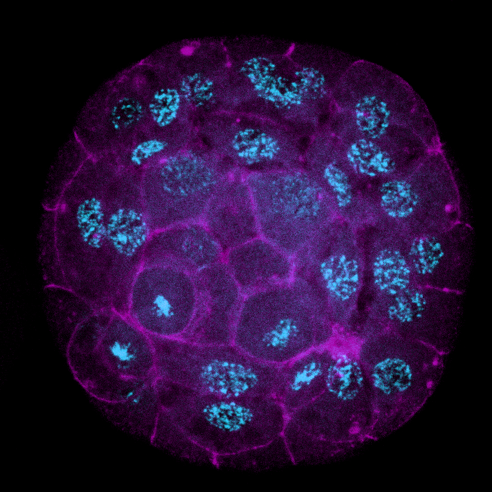

На этой странице располагаются фотографии эмбрионов большого прудовика с флуоресцентного микроскопа,
обработанные в среде ImageJ в рамках большого практикума.
Ранняя гаструла большого прудовика, совмещение оптических срезов Z3—Z4. Methyl green (циан) + Phalloidin 543 (маджента)

Ранняя гаструла большого прудовика, совмещение оптических срезов Z5—Z7. Methyl green (циан) + Phalloidin 543 (маджента)